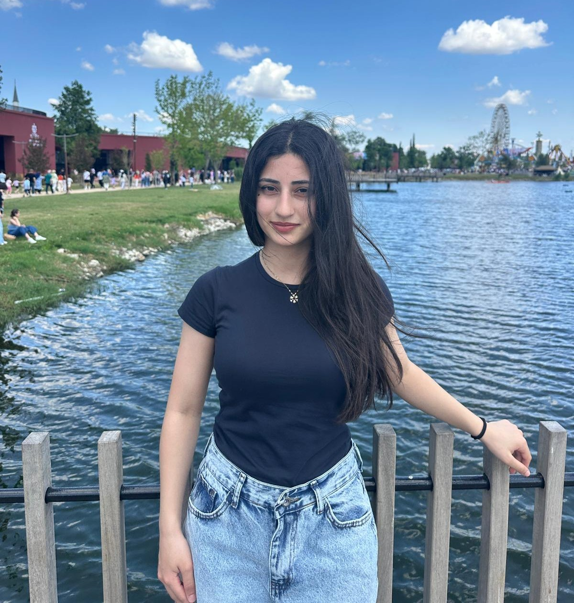

Kocaeli'de 20 Ağustos 2006 tarihinde doğdum. Güçlü bir empati hissi, harika bir enerjim ve devasa bir merakım var. İleri görüşlü ve sabırlı biriyim. Çok duygusal bir insan olsam da mantıklı düşünme konusunda da başarılıyım. Şu anda yolculuğumun en başında bulunuyorum. Hala temelleri öğreniyor ve yolumun nereye gidebileceğini keşfediyorum. Büyüdükçe kendimi ifade etmek ve hikayemi paylaşmak için bu web sitesini oluşturmaya karar verdim. Şu anda ilk websitemin satırlarını okuyorsunuz.. Bu web sitesini geliştirmeye devam edeceğim. Bu web sitesinde kendimden, eğitimimden, deneyimlerimden ve ilgi alanlarımdan bahsedeceğim. Ayrıca, bu web sitesinde gelecekteki projelerimi ve hedeflerimi de paylaşmayı hedefliyorum. Bu web sitesini ziyaret ettiğiniz için teşekkür ederim!
GIEN Bünyesinde, LiDAR nokta bulutu verileri üzerinde nesne etiketleme ve sınıflandırma (annotation) işlemleri yaptım. Proje kapsamında paylaşılan ham verileri belirlenen kategorilere göre 3D olarak işaretledim.
Herhangi bir sorunuz veya görüşleriniz varsa, lütfen bana ulaşmaktan çekinmeyin: